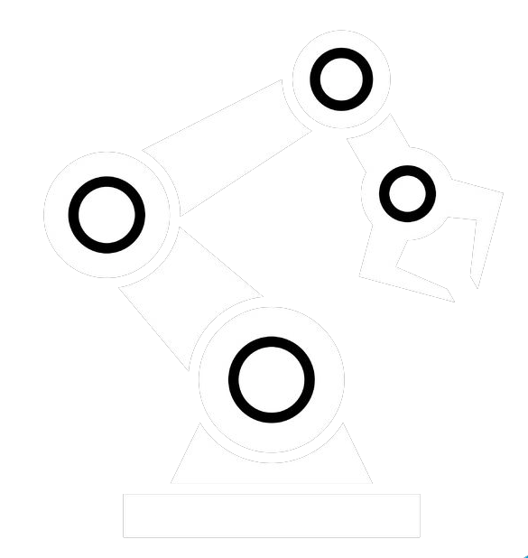

Control Remoto de Robot
Interfaz para controlar el robot desde tu computadora
⬆️ Adelante
⬅️ Izquierda
⏹️ Stop
➡️ Derecha
⬇️ Atrás
Estado del robot
Robot listo para recibir comandos
Estado:
Desconectado